第1轮最终版本试玩
第16回合完成
1,324次普通按键记录，含结算与对应后续操作。
重新核对七张战斗地图、六处据点与世界环境。上轮确认的病房、日宫、书库、前庭和神座结构保留，集中修正地下与露天地面的区别、战后据点的室内空间，以及终战后的世界状态。
战斗图中只调整M52登天桥和F51祭所底层的地面材质；其余五图原文件、原生场景保持。全部行动格、桥梁通路、部署、敌人、任务对象、剧情、数值和现有动画沿用。六据点通过显示覆盖调整，原碰撞、对象和出入口保持。
世界图继续沿用第四章已确认的高地雪地、日照带、盐原和湿地，补神宫入口、桥头与建筑前场的石地。世界节点是地理位置与外部建筑标志；日宫和书库的室内材质由战场及据点呈现，不把世界图当室内平面图。原世界节点、道路、解锁与行军规则逐字节保持。
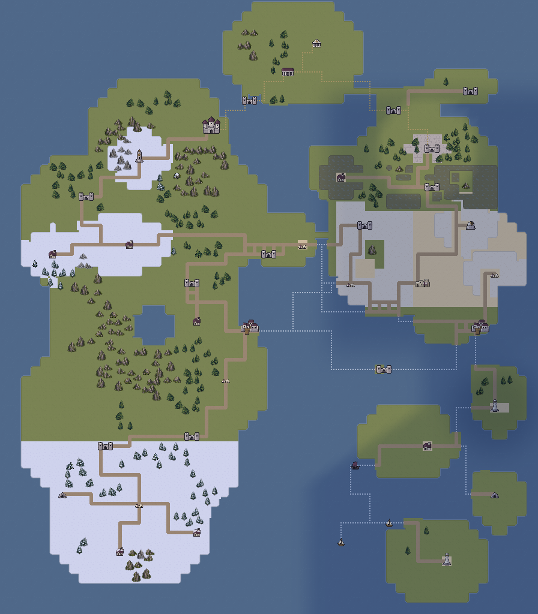
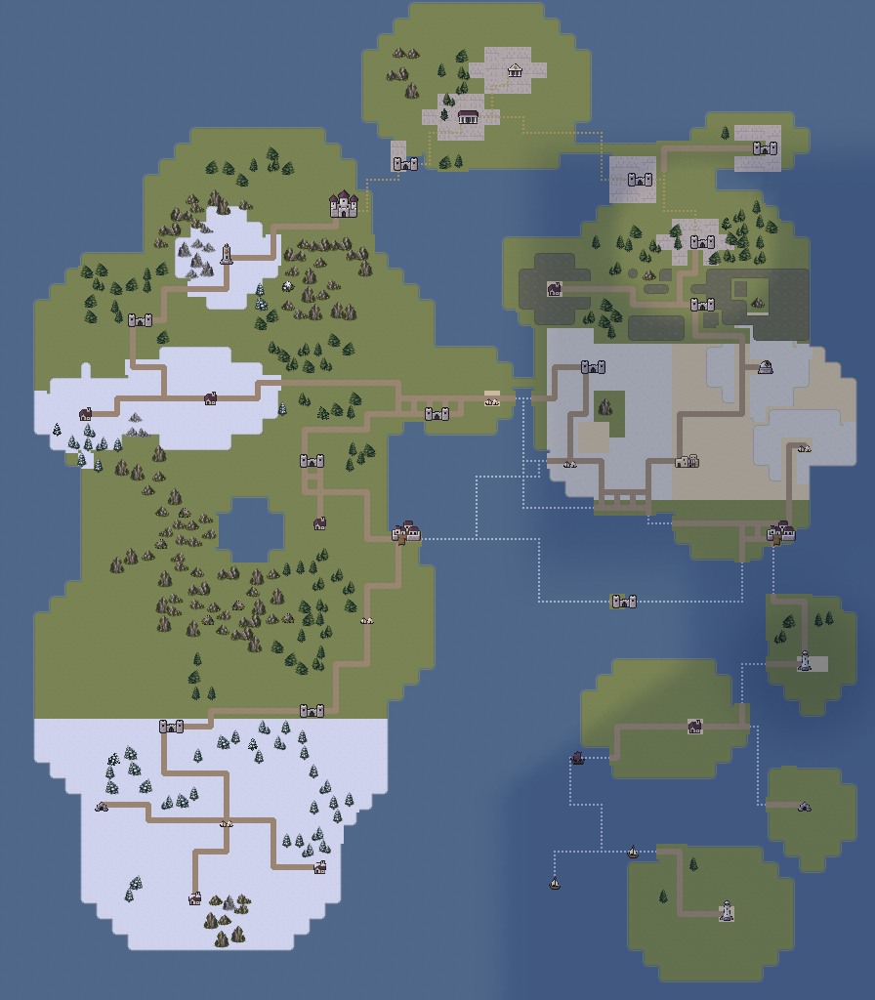
进入第五章时，祭所及邻近地区保留第四章验证后的亮光；完成F51交接后，修复网络扩展至日宫与书库前场。远处盐原与旧群岛仍处冷暗环境，直到乌库布·卡基败亡。
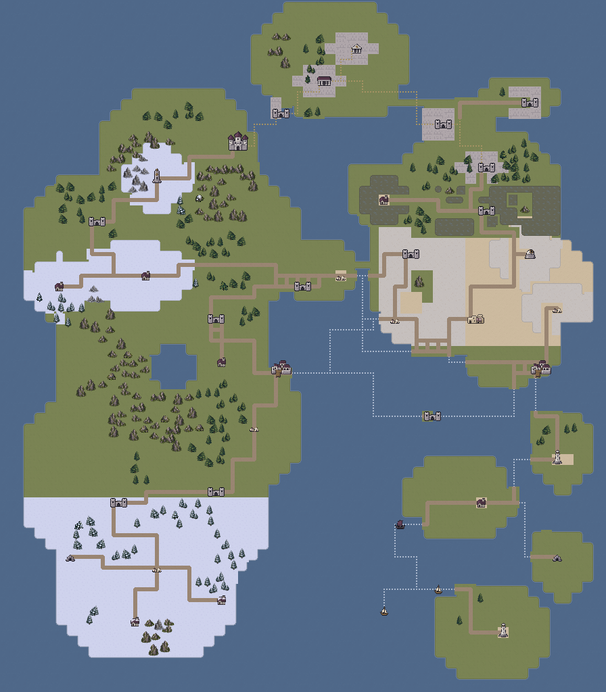
上方终战后总览是渲染器对结局状态的显示预览，不表示结局菜单新增了自由行军入口。实际游戏仍进入原有逐页结局。雪地、盐土、湿地、海岸和断裂地理保持，不因照明恢复立即变成旧版草地。
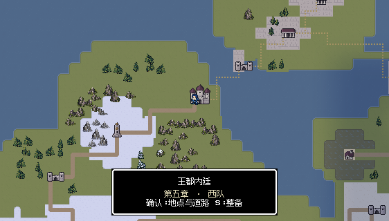
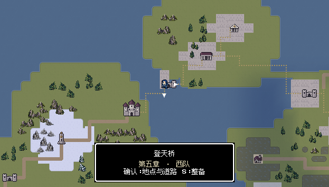
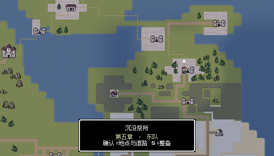
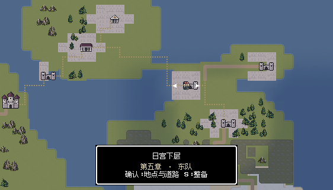
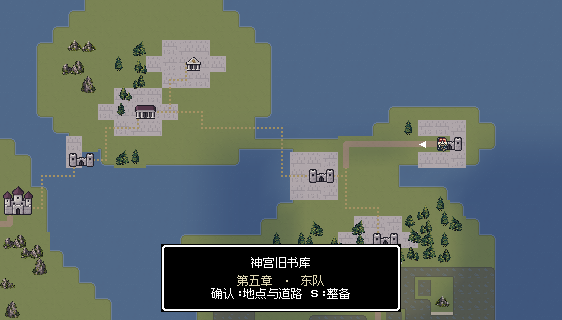
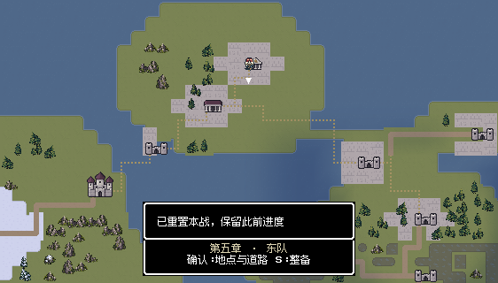
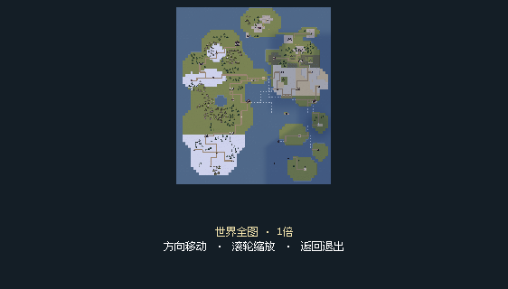

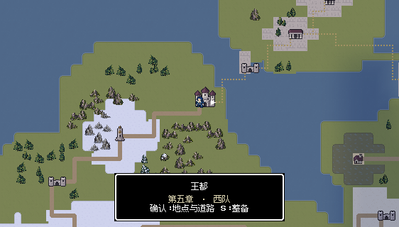


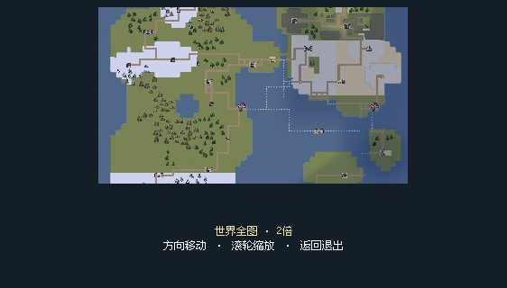
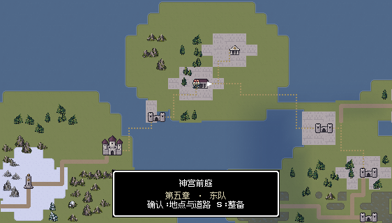


王都内廷是室外石庭与两间去顶病房；院落、室内床位、医护出口及花园材质关系正确，原图保留。

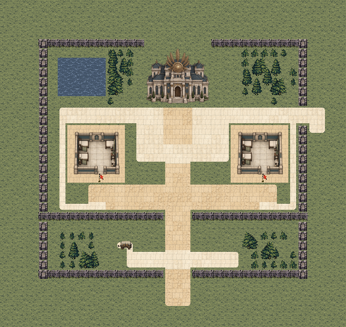
1,324次普通按键记录，含结算与对应后续操作。
1,284次普通按键记录，含结算与对应后续操作。
登天桥是露天石制桥面，不是室内走廊；中央旧紫色铺面统一为风化大石铺，桥栏、三段控制点、海水和崖岸保持。

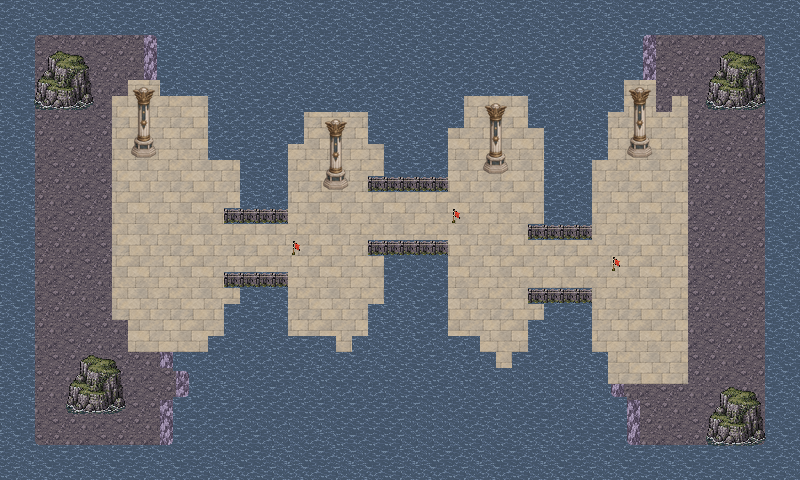
963次普通按键记录，含结算与对应后续操作。
1,041次普通按键记录，含结算与对应后续操作。
祭所底层是地下水工层，两处装置、室内工作间、检修木桥和贯通人工水渠保留；石砌工作地与主通廊统一室内磨损石板，配合较冷的地下光，区别露天砌石。

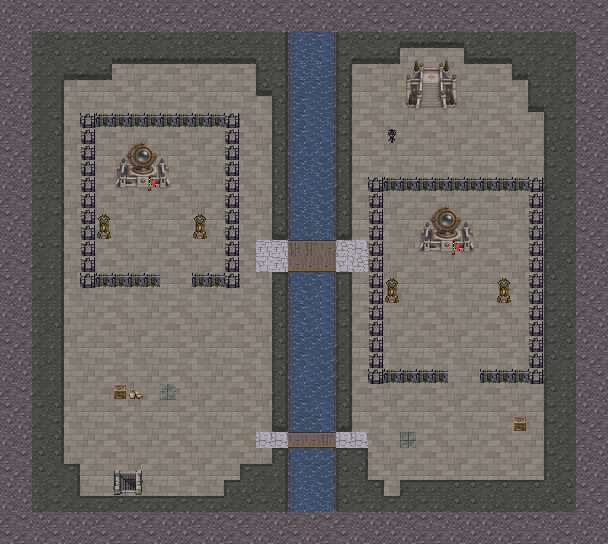
2,475次普通按键记录，含结算与对应后续操作。
2,455次普通按键记录，含结算与对应后续操作。
日宫下层已采用去顶室内、神宫大理石地、北门框、设备间和人工蓄水池，空间表达正确，原图保留。

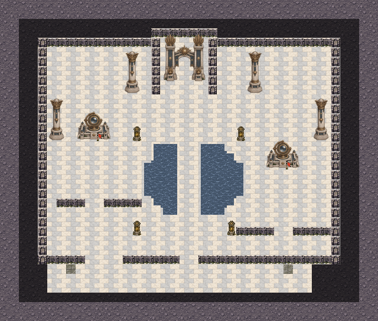
1,412次普通按键记录，含结算与对应后续操作。
1,717次普通按键记录，含结算与对应后续操作。
旧书库已是完整去顶室内，阅读翼木地、中央石廊和真实书架阻挡正确，原图保留；战后记录室单独修正。
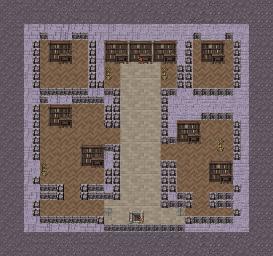
847次普通按键记录，含结算与对应后续操作。
838次普通按键记录，含结算与对应后续操作。
神宫前庭为露天园林石庭，完整正殿属于外部建筑；双侧门阵、同层池桥与室外石铺合理，原图保留。
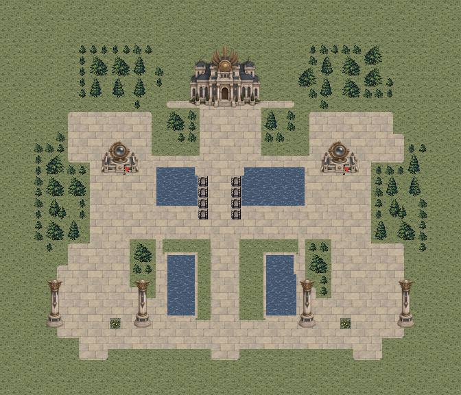
2,884次普通按键记录，含结算与对应后续操作。
2,975次普通按键记录，含结算与对应后续操作。
神座为露天高台，神宫大理石上庭、园林与三座真实阶口成立；台地挡墙、池岸和退守区已与行动一致，原图保留。
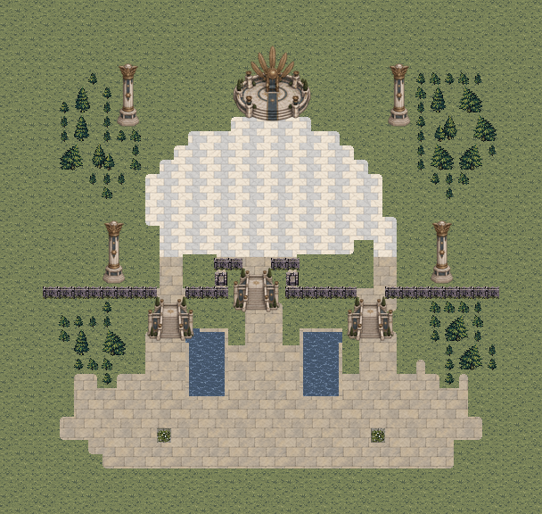
2,591次普通按键记录，含结算与对应后续操作。
2,423次普通按键记录，含结算与对应后续操作。
H53修复间使用室内石板，H54东门廊使用神宫大理石；H56记录室使用木地与石廊，完整屋顶书库改为同占地书架库位。三处室内原花丛改同占地储料箱。H51照护院、H52桥头营地、H55前庭整备保留外部建筑与草园，前场改露天砌石。


七图各完成两轮最终版本普通输入通关，共14场、25,229次按键。两轮均在素材完成导入后从真实记录的隔离副本重新进入当前地图，未编辑战斗属性、随机结果、位置或强制胜利。
| 地图 | 第一轮 | 第二轮 | 连续流程 |
|---|---|---|---|
| M51 | 16回合 | 17回合 | 16回合 |
| M52 | 13回合 | 14回合 | 13回合 |
| F51 | 24回合 | 25回合 | 25回合 |
| F52 | 17回合 | 20回合 | 14回合 |
| S51 | 8回合 | 8回合 | 8回合 |
| J53 | 10回合 | 11回合 | 11回合 |
| J54 | 11回合 | 10回合 | 13回合 |
从本轮第四章真实完成记录开始，连续完成第五章七战、两军名单确认与合流，并逐页读完完整结局。伤情、成长和物资自然继承，使用既有菜单整备与救治，没有重试、跳关或修改属性。
连续流程共12,722次按键，实际读完22页结局。此记录与两轮逐关重开分开保存；逐关样本的结局页数可随实际名册和伤情不同。
2597项规则、连通与保存检查，709项修改范围检查，268项世界阶段检查，799项据点显示检查和15项材质名称检查通过。水体提示按人工水渠、室内蓄水池和庭院水池区分，通行与数值不变。21张战斗、24张世界、6张据点、3张合流与结局实机视口在后台捕获，记录的文字安全区检查无错误。
独立应用完成13,234项地图与资源核对，包内40图与当前源文件SHA-256逐一相同。导入后可见像素、书架透明边缘和原尺寸已核对，动画及战斗规则代码保持。
逐关两轮不等于两次从新游戏通关；另有本轮第四章完成记录开始、无重试的完整连续流程。早期在资源导入完成前启动的检查未计入最终两轮，最终选用记录中没有脚本或缺失资源错误。结局后的世界总览为只读显示规则预览，未新增终战后自由行军。
本轮只复用原生像素瓦片、设备与完整书架模块，没有新增AI生成素材。图集保留原始瓦片分辨率和索引，采用无损资源；大幅总览优先保持清晰度。未安装手机包；HTML资源与脚本检查不等于浏览器布局引擎实测。
修改范围检查 · 规则检查 · 完整连续通关 · 材质名称检查 · 当前独立包核对 · 交付清单 · 完整流程文档1.20